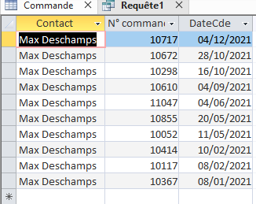
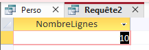
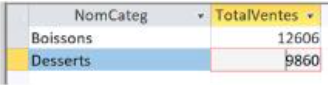

Partie 3 : Systeme de fidelité
Dans cette partie, ce qui m'a été demandé était la mise en place d'un système de fidélité.
Bilan de l'étude
Durant cette étude, j'ai travaillé sur les fondations du développement d'une application et je m'occupais du côté durable et écologique, mais aussi des coûts logistiques. C'est ainsi qu'est venue l'idée de faire un moyen d'appliquer un système de fidélité avec une méthode de points à gagner au fur et à mesure des achats et de leur coût afin de créer une clientèle fidèle qui durera dans le temps avec des cartes de fidélité écologique et mettre en avant des propositions qui peuvent plaire à notre clientèle, diversifier et gérer nos coûts logistiques en fonction de cette fidélité.
Requêtes personnalisées
Cette recherche d'idée et la mise en place de système de fidélité m'a fait réfléchir à comment exploiter la base de données Kdou dans cet intérêt.
- La requête principale :
- Cette requête sert à afficher les commandes d'un client spécifique et celle-ci va servir à effectuer notre système de fidélité qui contient Site à consulter les commandes de notre client afin de lui procurer des points sur notre application et ce même point mène à des réductions ou à des produits gratuits.

- Requête SQL :
SELECT Clientele.Contact, Commande.[N° commande], Commande.DateCde , COUNT(Clientele.Contact) FROM Clientele INNER JOIN Commande ON Clientele.CodeCli = Commande.CodeCli WHERE Clientele.Contact = "Max Deschamps" ORDER BY Commande.DateCde DESC;
- Les petits problème :
Certes cette requête fonctionne très bien, mais s'il y a une erreur lors de la composition du nom de la personne La requête est erronée. Mais aussi, il aurait été préférable d'afficher tout ceci par moi pour faciliter le comptage des points de fidélité par mois.

Requête SQL :
SELECT COUNT(*) AS NombreLignes FROM Perso; - Cette requête renvoie le nombre de lignes du tableau qu'on lui donne afin de rendre la tâche du comptage commande moins exhaustive pour celui qui utilise la base et bien évidemment il y a toujours le problème où il aurait Était plus facile pour les points que le tableau donné soit celui d'un seul et unique mois.
Analyse des données
Suite à ces observations, je me suis un peu plus penché sur les coûts logistiques et je me disais que je pouvais sans doute regarder les coûts annuels et voir si le système de fidélité a fait son effet sur la clientèle Kdou.
- Analyse des données :
Cette requête est là pour faire des comparatifs sur des produits qui ont été en promo ou qui ont été en réduction avec les points de fidélité en fonction des années.

- Requête SQL :
SELECT Categorie.NomCateg , SUM(DetailCommande.Quantite) AS TotalVentes FROM Categorie INNER JOIN ( Produit INNER JOIN DetailCommande ON Produit.RefProd = DetailCommande[Réf produit]) ON Categorie.CodeCateg = Produit.CodeCateg WHERE Categorie.CodeCateg = 1 OR Categorie.CodeCateg = 3 GROUP BY Categorie.NomCateg;
Allons à la prochaine partie
Partie 4